S1handcheek only
If you're not washing your face with a cleansing brush, what are you doing?
Side view of Grace's foamy cheek and jaw, the black brush making small circles. Product on screen from frame 0, like the 490K PRITECH winner.
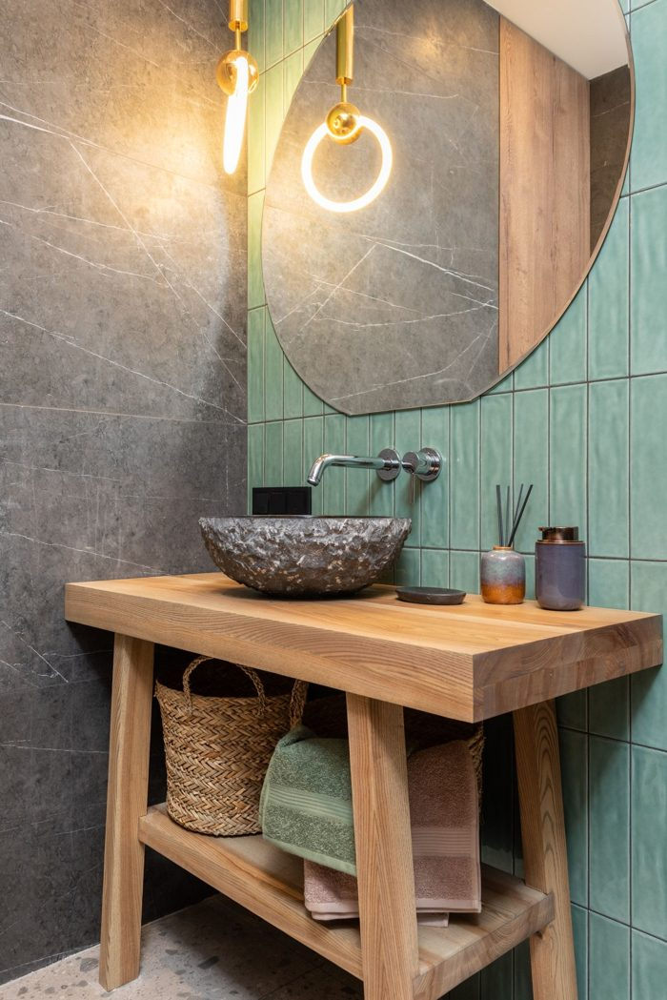
Grace · her storyboard script word for word · black PRITECH wand · 9 shots, about 27 s · no full face · no text · nothing spent yet.
Your notes: brush too chunky, S7 looks like someone else's hand.
Spent $0.81 of $3.66. October so far $155.04.
Gemini 3 Pro Image on Kie, your answers applied: hand sheet without the bracelet, French tips, no text. Checked at 2x: clean hand edges, the hands grip, black body with three buttons, chrome end, grey PRITECH on the stand.
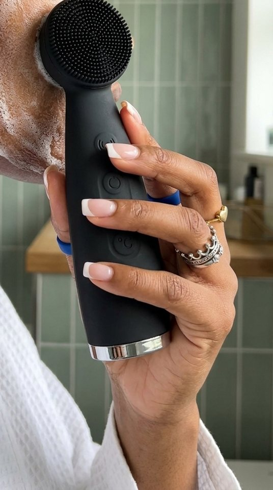
Cropped free: the first take showed her eye. Now brush on her foamy cheek, no eye.
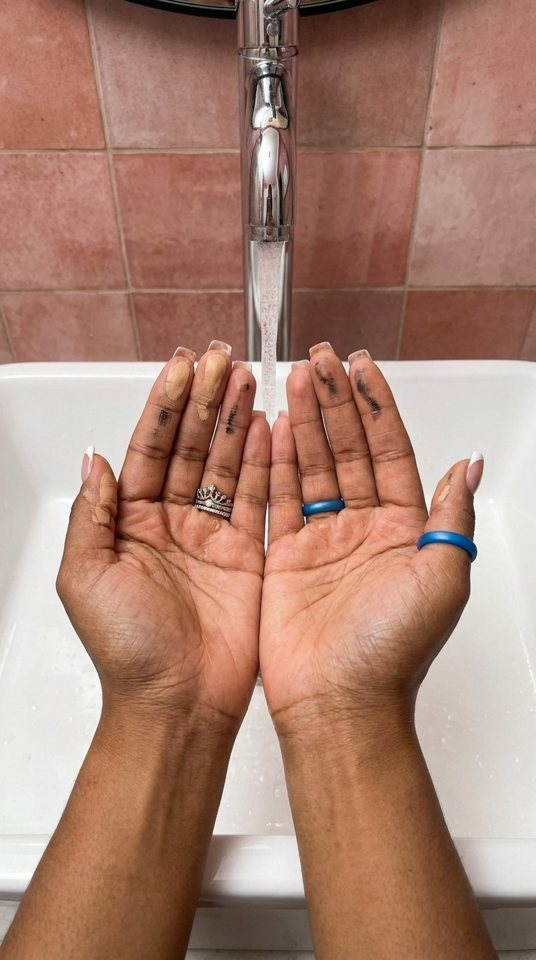
Makeup left on the fingertips under the tap.
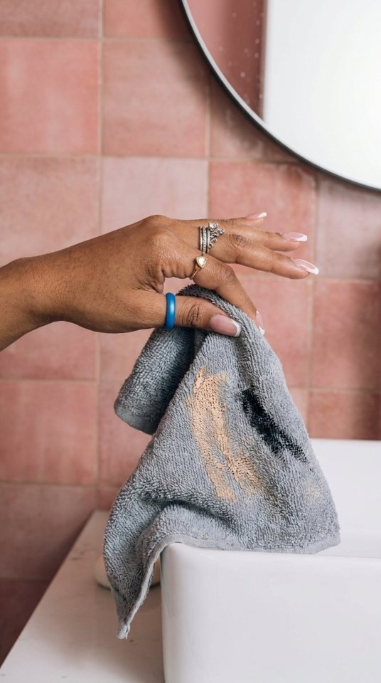
Grips the dirty towel. Blue band landed on her index finger: small, I'd let it go.
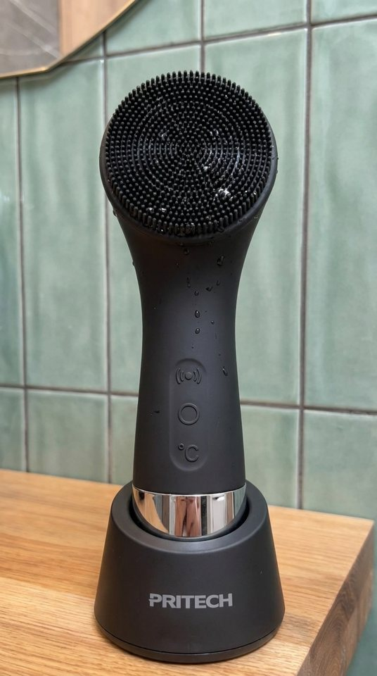
Bristles with water drops, PRITECH on the stand.
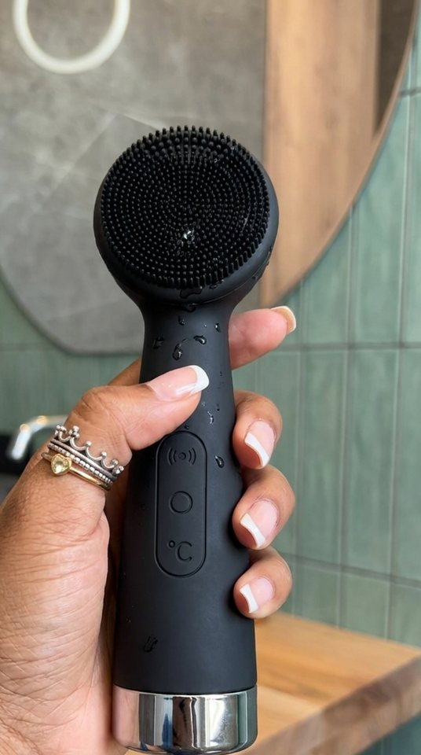
Cropped free: a blue watch strap showed at the wrist.
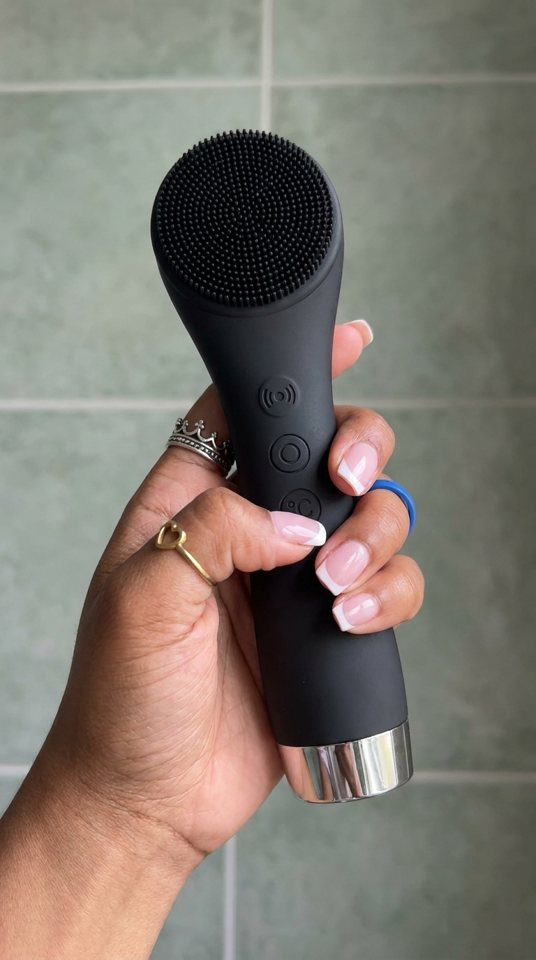
Test clip + Flow trial. Index finger by the °C button, chrome end in frame.
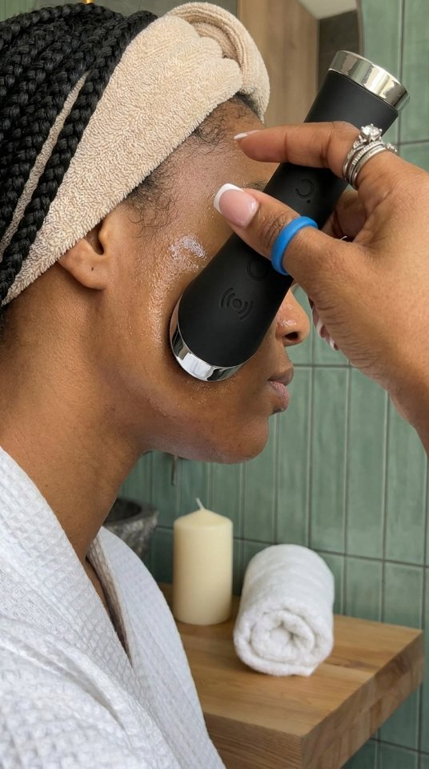
Metal end on her cheek, but her eye and nose show. Redo $0.09 or keep?
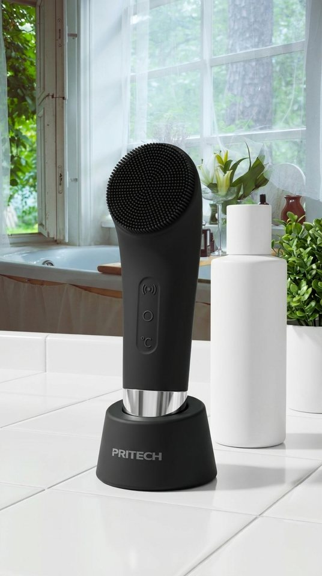
Window counter, plain white bottle, one brush.
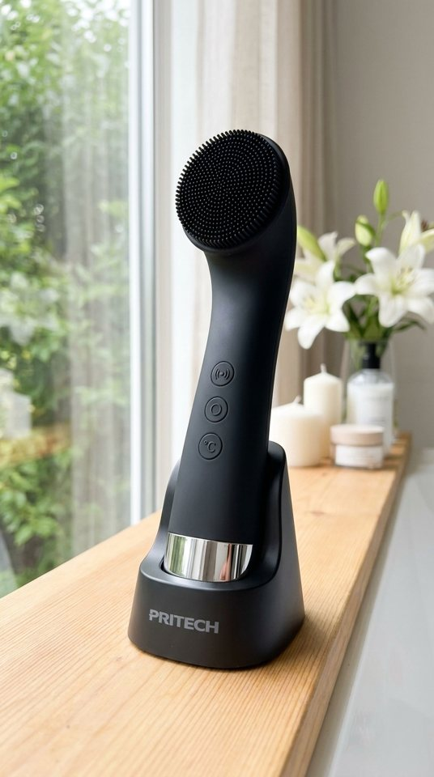
End shot: one brush, PRITECH readable.
Grace cloned voice, script word for word, 24.6 s. Echo 150 ms after the free cleanup (limit 150, passes; it read 200 before), every word kept.
Free take in your Google Flow app, to compare with the Kie one. Note your credits before and after (Account screen). Long-press each image to save it.
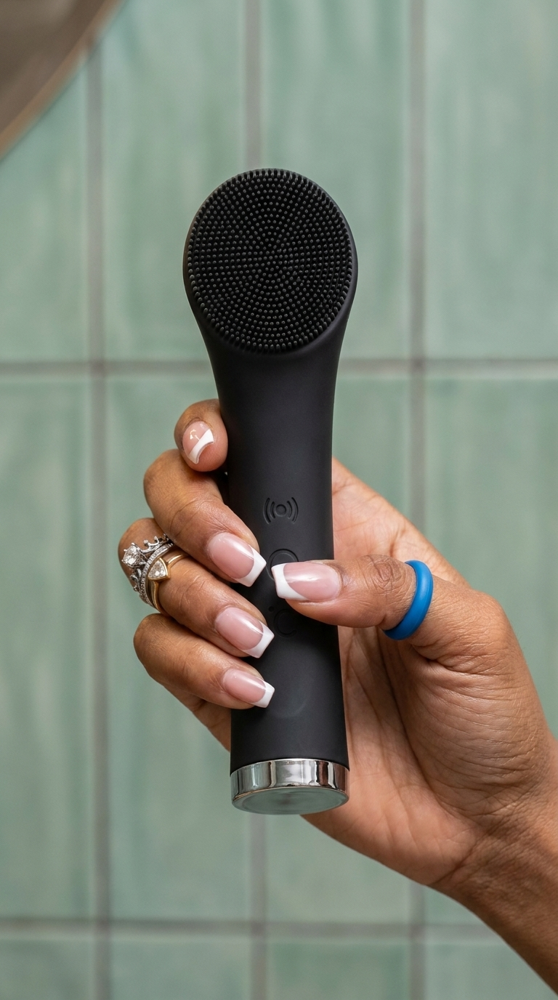
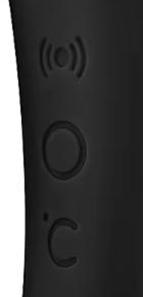
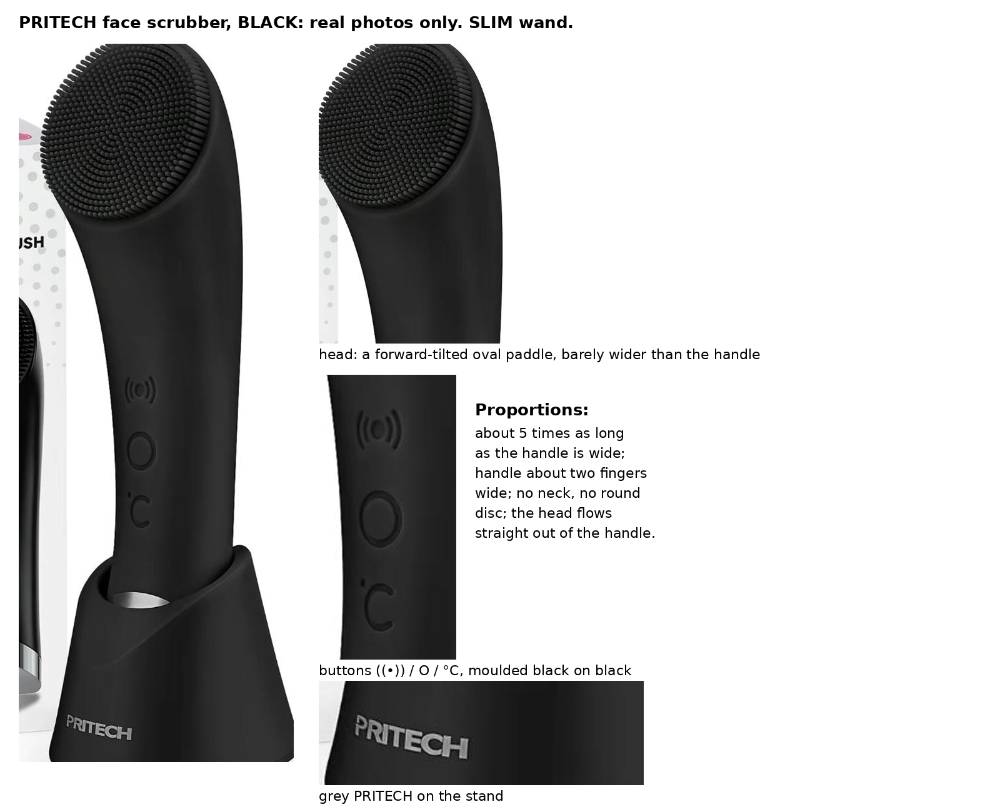
Prompt (copy it whole):
Recreate image 1 exactly as the first frame: keep its room, light, framing and hand exactly. Image 2 is the real three buttons ((•)) / O / °C, moulded black on black, matching image 2 exactly; image 3 is the product sheet: the wide flat silver chrome band at the bottom end, no lights, no glow, no added marks. Motion: her index finger presses the °C button once, then the camera tilts slowly down to the silver chrome end; the hand keeps one grip and the brush never turns or flips. Bright neutral daylight. No music, no voice, no captions, no on-screen text.
Send the clip back in this chat, or put it in the job's Drive folder.
Your answers: no bracelet, French tips as on the hand sheet, stills on Kie, no text. Book approved at $3.66.
If you're not washing your face with a cleansing brush, what are you doing? Your hands leave makeup and oil behind, and using a dirty face towel can transfer bacteria right back onto your skin. This one has soft silicone bristles, five vibration settings, and a warming feature that heats up to 104°F for that extra little spa feel. And for something you do every single day, you might as well do it right. Go grab yours from the orange cart before you forget!
Script gate OK. Reading grade 7.3, kept under your "Word for word" (recorded). Voiced "one hundred and four degrees Fahrenheit".
6 with Grace's hand, 3 hand-free. Product shots on Omni (product lock), the two no-product shots on Seedance.
If you're not washing your face with a cleansing brush, what are you doing?
Side view of Grace's foamy cheek and jaw, the black brush making small circles. Product on screen from frame 0, like the 490K PRITECH winner.

Your hands leave makeup and oil behind,
Two hands under the running tap, foundation and mascara smudges still on the fingertips.
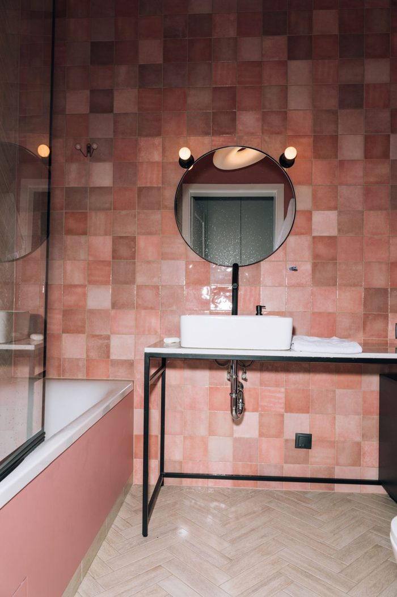
and using a dirty face towel can transfer bacteria right back onto your skin.
Hand grips a crumpled grey face towel with makeup smears and lifts it off the sink edge.
This one has soft silicone bristles,
Macro push-in on the bristle head, brush standing in its stand, a few water drops.
five vibration settings,
Thumb presses the top vibration button; the drops on the bristles shiver.
and a warming feature that heats up to 104°F
Thumb presses the °C button, camera tilts down to the silver metal end. Riskiest shot (small button icons), so it's the one test clip, made on Kie and as a $0 take in your Flow app.
for that extra little spa feel.
Metal end glides in slow circles on the cheek, rolled towel and candle soft behind.
And for something you do every single day, you might as well do it right.
Slow dolly along a bright window counter: brush in its stand, a plain cleanser bottle, a plant.
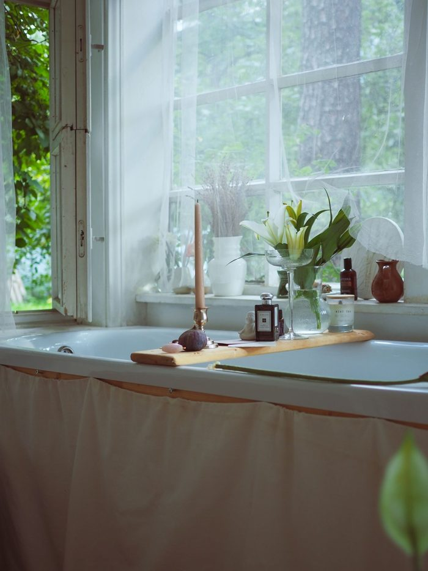
Go grab yours from the orange cart before you forget!
End shot: one brush in its stand, slow push-in, grey PRITECH on the stand.
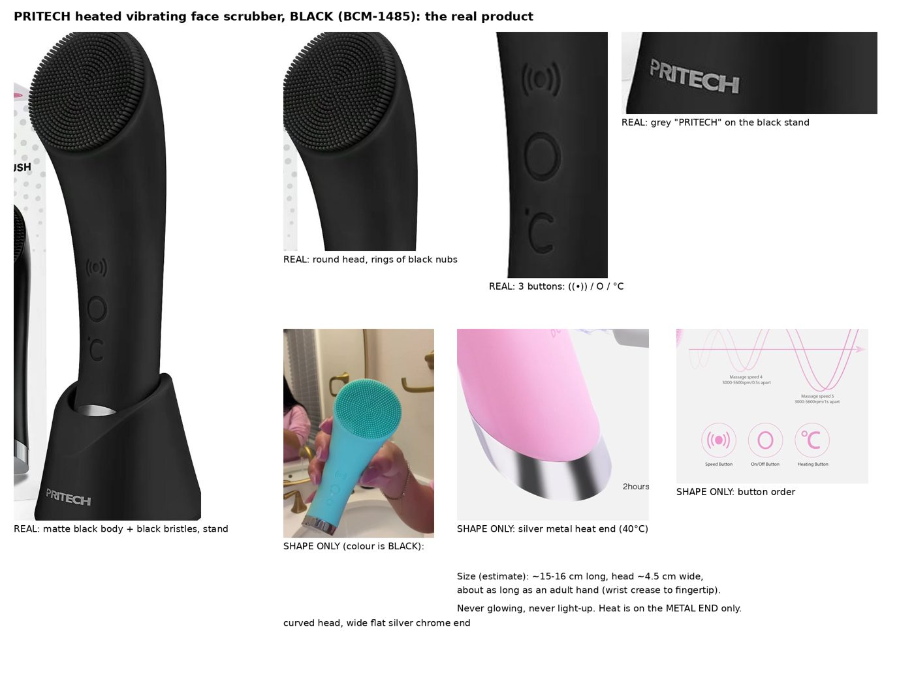
Matte black body and black silicone nubs, 3 buttons (vibration, on/off, °C), wide silver chrome end, black stand with grey PRITECH. No maker size found (Amazon refused my requests today), so I'm going by in-hand videos: about 15–16 cm, roughly one hand long. OK to use that?
Real Pexels photos, free licence.
| 9 stills, Gemini 3 Pro Image on Kie | $0.81 |
| 7 product clips, Omni on Kie, 4 s | $2.205 |
| 2 no-product clips, Seedance 2.0 Mini, 4 s | $0.328 |
| One likely redo, asked before it runs | $0.315 |
| S6 Flow trial take (your credits) | $0 |
| Total | $3.66 |
October so far: $154.23 (no cap this month). Voice: about 330 ElevenLabs characters. Time after your OK: stills about 10 min, then your storyboard check, then about 30 min to the first cut.